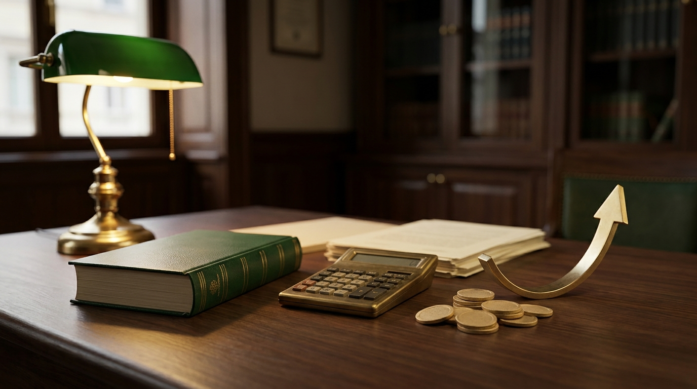

Incentivi assunzioni 2026: come funzionano gli esoneri contributivi INPS
Tornano al centro del dibattito gli incentivi all'occupazione gestiti dall'INPS, basati su esoneri contributivi per le nuove assunzioni. Prima di pianificare il reclutamento sfruttando questi benefici, il datore di lavoro deve verificare requisiti, limiti di importo e regole europee sugli aiuti di Stato: errori in fase di domanda espongono al recupero delle somme già fruite.

Di cosa parliamo
Gli incentivi all'assunzione sono agevolazioni che riducono il costo del lavoro, di norma tramite esonero contributivo: il datore versa una quota ridotta — o nulla, entro un tetto — dei contributi previdenziali dovuti per il lavoratore assunto.
È importante una premessa di metodo. La cosiddetta misura "Primo Maggio" che circola sui canali divulgativi va sempre verificata negli estremi ufficiali. Il D.L. 4 maggio 2023, n. 48 (convertito dalla L. 3 luglio 2023, n. 85) è il provvedimento storicamente noto con quel nome. Eventuali nuovi incentivi per il 2026, finché non sono pubblicati in Gazzetta Ufficiale e accompagnati dalle istruzioni operative INPS, restano allo stato di schema o annuncio: vanno trattati come prospettive, non come benefici già fruibili. Prima di costruire una strategia di reclutamento su un importo o una durata, occorre il testo definitivo con il comma di riferimento.
Inquadramento normativo
Due concetti vanno tenuti distinti, perché producono effetti diversi.
L'esonero contributivo incide sul datore di lavoro: riduce il versamento a suo carico. Non va confuso con la posizione previdenziale del lavoratore, che — salvo deroghe espresse — conserva la contribuzione figurativa o effettiva utile alla pensione. In altri termini, lo sgravio per l'azienda non deve impoverire la tutela previdenziale del dipendente.
L'importo e la durata di ogni misura (ad esempio un massimale mensile e un tetto annuo) sono fissati dalla norma istitutiva: vanno letti nel comma specifico, non assunti da titoli giornalistici. In assenza di riscontro, è prudente parlare di beneficio "nei limiti previsti dal decreto".
A monte si applicano i principi generali dell'art. 31 del D.lgs. 150/2015, comma 1, lettere a)-e), che valgono per quasi tutti gli incentivi:
- l'incentivo non spetta se l'assunzione costituisce attuazione di un obbligo preesistente, anche da contratto collettivo (lett. a);
- non spetta se viola il diritto di precedenza alla riassunzione di un altro lavoratore (lett. b);
- è precluso se presso il datore sono in atto sospensioni dal lavoro per crisi o riorganizzazione (lett. c), salvo eccezioni;
- non spetta in caso di assetti proprietari coincidenti con il precedente datore (lett. d);
- la fruizione richiede il rispetto degli obblighi di sicurezza e la regolarità contributiva attestata dal DURC (lett. e), oltre al rispetto della contrattazione collettiva.
La maggior parte degli incentivi rientra inoltre nella disciplina europea sugli aiuti di Stato: spesso opera il regime *de minimis* di cui al Reg. UE 2023/2831, che fissa massimali per impresa in un dato arco temporale. Il superamento del plafond rende l'aiuto non spettante.
Implicazioni pratiche
Queste misure operano quasi sempre con prenotazione delle risorse in ordine cronologico: l'INPS riceve le domande e impegna i fondi disponibili fino a esaurimento. Chi presenta tardi rischia di restare escluso anche avendone diritto. La tempistica, dunque, conta quanto i requisiti.
Il secondo punto è il rovescio della medaglia. Se l'agevolazione viene fruita senza i presupposti — obbligo preesistente ignorato, diritto di precedenza violato, DURC irregolare, plafond *de minimis* superato — l'INPS procede al recupero delle somme, con sanzioni e interessi. Il beneficio, in questi casi, si trasforma in un costo aggravato.
Cosa fare in concreto
- Verifica la fonte ufficiale. Prima di pianificare assunzioni su un incentivo, controlla la pubblicazione in Gazzetta Ufficiale e la circolare INPS che ne definisce importo, durata e modalità di domanda.
- Controlla i requisiti dell'art. 31. Escludi l'esistenza di un obbligo di assunzione, di un diritto di precedenza e di sospensioni in corso; aggiorna il DURC.
- Misura il plafond *de minimis*. Calcola gli aiuti già ricevuti nel periodo di riferimento per non superare il massimale del Reg. UE 2023/2831.
- Presenta la domanda tempestivamente. Predisponi la pratica telematica per accedere alla prenotazione delle risorse prima dell'esaurimento dei fondi.
- Conserva la documentazione. Archivia contratti, calcoli del beneficio e attestazioni: serviranno in caso di controllo per dimostrare la corretta fruizione.
La valutazione caso per caso, prima dell'assunzione, riduce il rischio di contestazioni e di recuperi successivi.
---
Contributo informativo a cura di Tamburro & Partners - Avv. Giuseppe Tamburro. Non costituisce parere legale.
Ogni storia di lavoro ha i suoi tempi.
Se gestisci HR e vuoi un confronto su contenzioso, ispezioni o licenziamenti, scrivi allo studio. Ti rispondiamo entro un giorno lavorativo.